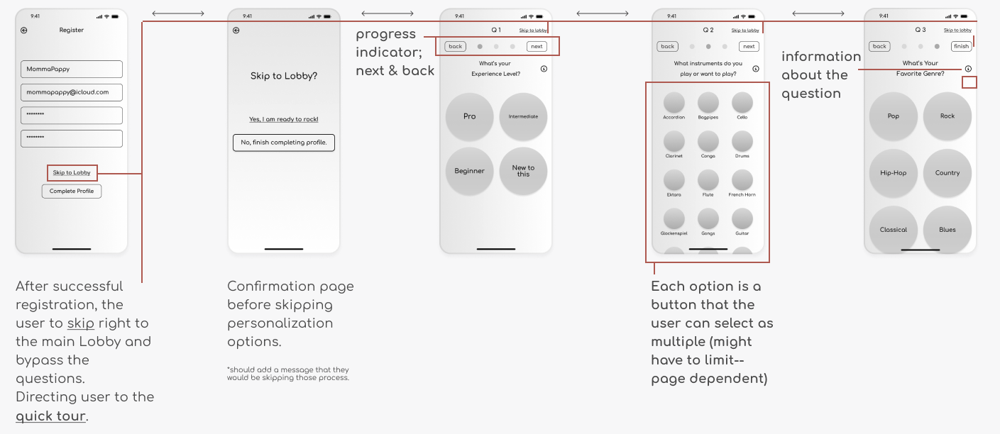
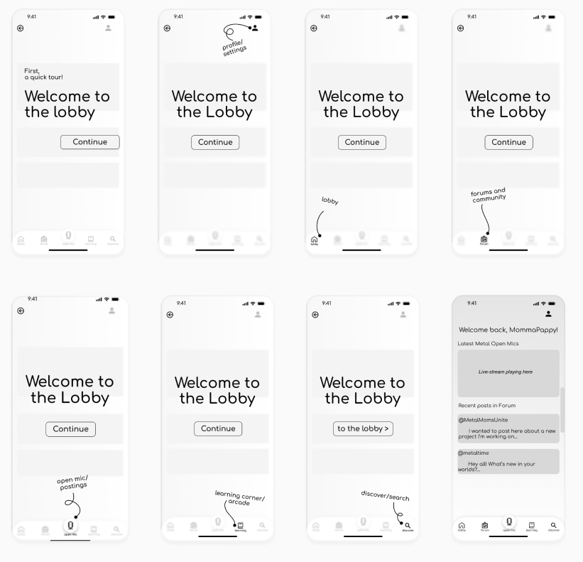
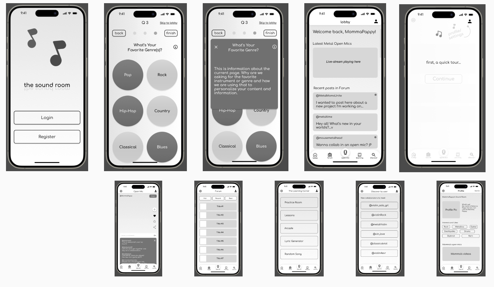

The Sound Room
UX Case Study: Mobile App Design
Project Brief
Design a mobile app for a product. Display knowledge of UX design process, and produce low-fidelity prototype.
Context
Case study done for the University of Denver. We were assigned a team to collaborate on design project of our choosing:
- Develop a user research plan,
- Conduct interviews,
- Design low-fidelity clickable prototype,
- Test results
- Present findings
Team Collaboration
Garrett Martin User Experience Designer
Jacueline Kharouf User Experience Designer
Jacueline Kharouf User Experience Designer
My Role
My contributions leaned on my background in graphic design. Understanding the demographics and the potential audience, knowledge on prototyping and components, and taking the initiatives and lead for team brainstorming sessions.
Tools
Duration
2 Weeks
Discovery & Research
Audience
Our initial audience was targeted towards emerging artist that needed help showcasing their skills and networking. Based on our research we shifted out target to families and younger audiences.
The need for non-business purposes seem to be not as high. but it is still interesting to read the lastest information regrading agriculture and similar topics.
Goals
Design a fun and safe social media environment for musicians and fans alike.Encouraging collaborations and nourishing inspiration.
Interview Transcipts
“Writer's block sucks!”
“My dad had a drum set in the basement, the album Dookie from green day came out and i sat down and learned how to play along to the entire album.”
“My dad has always been a musician and showed me a few things on garage band. Then when I went to college, I worked on these kinds of projects. I just love EDM.”
Sythesizing Research
User Journey, Story Board, Insights
As a team, we identified some factors that helped shaped the case study to its targeted users.
 The individuals that we had interviewed were all over the age of 25. This put an interesting perspective towards our initial live-stream feature. Most did not live-stream or have any inclination to post or participate.
The individuals that we had interviewed were all over the age of 25. This put an interesting perspective towards our initial live-stream feature. Most did not live-stream or have any inclination to post or participate.
 However, they all saw the value in the concept of putting the work out there and excepting feedback, collaboration or help with inspiration.
However, they all saw the value in the concept of putting the work out there and excepting feedback, collaboration or help with inspiration.
 One other commonality that I observed from the interviews was how and when the artist began their musical interest. Most began between the ages of 10-13. Based off the interviewees' responses towards live-streaming and how they first got started with an instrument.
One other commonality that I observed from the interviews was how and when the artist began their musical interest. Most began between the ages of 10-13. Based off the interviewees' responses towards live-streaming and how they first got started with an instrument.
I introduced the idea of adjusting the target audience to a younger demographic and families.
 This began to snow ball. Jonathon introduced the idea of a Learning Corner. A place where anyone can go to play various games to help spark inspiration, learn new skills, grow current skills, or compete.
This began to snow ball. Jonathon introduced the idea of a Learning Corner. A place where anyone can go to play various games to help spark inspiration, learn new skills, grow current skills, or compete.
 Jacqueline introduced an Open Mic concept for users to post, live-stream, collaborate, provide feedback, comment, like, favorite. She also added the idea of having a practice/audition room. So anyone can practice before they post.
Jacqueline introduced an Open Mic concept for users to post, live-stream, collaborate, provide feedback, comment, like, favorite. She also added the idea of having a practice/audition room. So anyone can practice before they post.
 Displayed below is the user journey map detailing the key emotional moments accompanied by a storyboard to better visualize the product being used.
Displayed below is the user journey map detailing the key emotional moments accompanied by a storyboard to better visualize the product being used.
Ideate & Define
Problem
There are no social media platforms that provide a fun, safe, collaborative, and inspirational environment for young musicians and fans alike.
Hypothesis
- By marketing features focused towards families and a younger (8-15 year olds) audience will drive downloads, new live-streams, and and demolish the dreaded writer's block.
Feature Priority, Competitor Analysis, and User Flow
 Feature priority matrix listing potential functions and feature. Highlighting those that we felt impactful based on user research.
Feature priority matrix listing potential functions and feature. Highlighting those that we felt impactful based on user research.
 Competitor Ananlysis help contrast features that The Sound Room either can do better or thatit does not have. This helped us narrow the scope of the product to better target certain features. We looked at TikTok, Instagram, and Vampr.
Competitor Ananlysis help contrast features that The Sound Room either can do better or thatit does not have. This helped us narrow the scope of the product to better target certain features. We looked at TikTok, Instagram, and Vampr.
 Lastly the user flow ensure the team designs for every possible screen and catch thing that might need to be added.
Lastly the user flow ensure the team designs for every possible screen and catch thing that might need to be added.
 After an established flow was created, we then moved on to paper prototying.
After an established flow was created, we then moved on to paper prototying.

Prototyping
Wireframe Sketches & Paper Prototype
Staring off with paper skecthes and prototyping based on user flow and feature priority matrix.
 My task was to skecth out various homepage designs and the on-boarding process.
My task was to skecth out various homepage designs and the on-boarding process.
 To better understand the user that is signing-up, we decided to implement not only a quick quesionnarie, but also a "quicky storee" of the app.
To better understand the user that is signing-up, we decided to implement not only a quick quesionnarie, but also a "quicky storee" of the app.
Low-Fidelity Prototype
Registration On-Boarding
Purposing to adapt a new design system. Bringing new life to the site, while maintaining a professional "goverment feel."
Just A Quick Tour
Purposing to adapt a new design system. Bringing new life to the site, while maintaining a professional "goverment feel."
iOS Mid-Fidelity Mockups
Purposing to adapt a new design system. Bringing new life to the site, while maintaining a professional "goverment feel."
Usability Testing
We sent off the low-fidelity protottype to fellow muscians, family memebers, and friends. Here are the results thus far.
User A
Loves listening to music and discovering new arists.
- This user showed that when registering, they liked the option to skip through the all the information and "tour." They liked the idea, but too excited to get started.
- They loved all the featured. "I am not very muscially savvy, but I think the games could teach me a thing or two."
- Would like a little more "fan-based" appreciation/features.
User B
Huge musci fan, plays a few instruments and was once in a band.
- Loves the idea of tools and features to help with writer's block.
- "Practice makes perfect." Likes the idea of having a practice area before going live or trying new filters.
Conclusion
I would consider the hypothesis correct. Targeting a more younger crowd, given the games and writer's block features, was very well recieved. Moving on to high-fidelity prototying to help bring this product to life a little more.